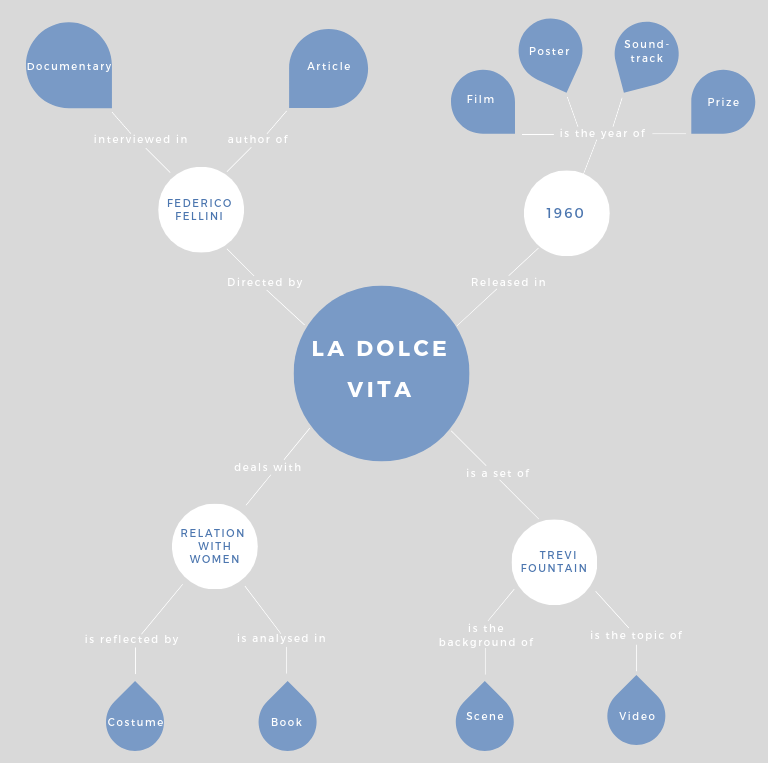

© Copyright 2019 La dolce vita - All Rights Reserved
QUI VA INSERITO QUELLO CHE LA LUCI STA FACENDO SUGLI ITEMS
This model relates the central idea of the movie "La Dolce Vita" directed by Federico Fellini during 1960. Then we choose to emphasize the iconic set of the Trevi Fountain as a place related to the main idea. if the movie present several important thematics we were interested to analyse the relationship pf Fellini with the female world. Consequently, in this model you can find entities represented as circles, items as drops that are connected by relationships
| Type | Title | Provider | Metadata standard |
|---|---|---|---|
| Book | "Nella città delle donne. Femminile e sogno nel cinema di Federico Fellini" of Cini Roberta | ScopriRete | ISBD |
| Costume | Anita costume: "Il pretino" | Sistema Archivistico Nazionale (SAN) | ISBD |
| Dvd | "La Dolce Vita" | Cineteca di Bologna | ISBD |
| Photo | The protagonists Marcello Mastroianni and Anita Ekberg in the Trevi fountain, Rome 1959 | Getty image | It is not specified, we decide to use IPTC |
| Photo | Fellini with the "Palma d'oro" prize | Roger-Viollet partner of Europeana photography (through getty image) | EDM |
| Poster | Poster of "La Dolce Vita" | Sbn Ubo | ISBD |
| Article | Fellini "spettatore" del suo film : Processo alla "Dolce vita" | Cineteca di Rimini | ISBD |
| Soundtrack | La dolce vita / Music composed by Nino Rota | CulturaItalia | PICO |
| Video | Interview "Fellini portrait" | Institute National de l'Audiovisuel | EAD |
| Video | Video of Trevi Fountain | Archivio Istituto Luce | EAD |
notes: Institute Luce, points out to use FIAF while in reality has used the EAD rules, for this we have agreed to use as reference EAD. We also contacted OPAC of the Bolognese centre because it was not clear about the standards used. they confirmed the use of REICAT, despite this, for all bibliographic resources we decided to use the ISBD standard because of its international value and because REICAT is also based on ISBD.
| PROPERTY | EDM | PICO | EAD | ISBD | IPTC |
|---|---|---|---|---|---|
| Creator | dc:creator | pico: creator | <author>(in <eadheader>) | 1.4 Statement of responsibility | 6.5 Creator 6.6 Creator's contact info 6.7 Creator's jobtitle |
| Publisher | dc:publisher | pico: publisher pico:distributor pico: printer |
<publisher> (in <eadheader>) | 4.2 Name of publisher, producer and/or distributor | |
| Owner | edm:Provider | pico: IsOwnerOf | 10.14 Image Supplier |
| PROPERTY | EDM | PICO | EAD | ISBD | IPTC |
|---|---|---|---|---|---|
| Created | dcterms:created | pico: created | <unitdate> | 4.3 Date of publication, production and/or distribution | 6.9 Date created |
| Published | <date> (in <eadheader>) | 4.3 Date of publication, production and/or distribution |
| PROPERTY | EDM | PICO | EAD | ISBD | IPTC |
|---|---|---|---|---|---|
| Current location | edm:current Location | (4.1.4 Subsequent place) | |||
| Publish location | pico: coverage | <geogname> (in <controlaccess>) | (4.1 place of publication, production and/or distribution | ||
| Locatation of creation | pico: coverage | 10.18 Location created 10.19 Location Shown in the image |
| PROPERTY | EDM | PICO | EAD | ISBD | IPTC |
|---|---|---|---|---|---|
| Title | dc:title | pico: title pico: alternative |
<unittitle> | 1.1 Title proper 1.2 Parallel title |
6.23 Title |
| Description | dc:description | pico: description pico: tableOfContents |
<abstract> | 5 Material description area | 6.10 Description |
| Subject | dc:subject | pico: subject | <subject> | ||
| Type | dc:type edm:type |
pico: Type | 0.2 Media type | 10.7 Digital source type | |
| Material | dc:type edm:type |
pico: materialAndTechnique pico: medium |
1.3.1. Applicazione delle norme ai diversi tipi di materiale; APPENDICE C-desginazione generiche del materiale | 11.1.12 Physical Description | |
| Format | dc:format | pico: format pico: isFormatOf |
|||
| Size/Duration | dcterms:extent | pico: extent | <materialspec> | 5.2.7.6 Groove size | 10.20 Max avail Height 10.21 Max avail Widht |
| Language | dc:language | pico: language | <langmaterial> | A.5 Language and script of the description | |
| Identifier | dc:identifier | <eadid> | 8.1 Resource identifier | 10.6 Digital image GUID | |
| Rights | dc:rights edm:rights |
pico: rights pico: rightsHolder |
4.03.06 | 6.8 Right usage terms | |
| Summary/(note) | skos:note (????) | pico: abstract | <note> | 7.10.2 Notes providing a summary | 6.12 Headline |
Having to reflect on people in relation to the items, for example Fellini is the author of the article but also the director of the dolce vita. Our intent is not only to describe "people" as authors or objects of the items but in relation to "La Dolce Vita" itself. Therefore we need not only a precise description of the individual persons but a description that is in function of the role that these have in relation to the creation / preservation and dissemination of the film. Consequently, we decided to use the following ontologies and standards: -FOAF To highlight the personal information of the person/organisation The FOAF ("Friend of a Friend") project is a community driven effort to define an RDF vocabulary for expressing metadata about people, and their interests, relationships and activities. -EAC- CPF, DBpedia, SCHEMA when foaf did not provide a method to define other information relevant to us.
In the context of the description of entities place we use the most important ontology in this fields: Geoname, DBpedia, Basicgeo and in particular we have also included EAC CPF to highlight the role that had a certain place within our idea.
For the concept of time we can refer both to time as the date of the event and to notion of time (duration of the film). Since is the most important we decide to the International Standard for the representation of dates and times ISO 8601 specified by the W3Consortium., n the format Complete Date: YYYY-MM-DD (Y=year, M=month, D=day). To include this information in the XML file we used the EAC-CPF attribute for Date standardDate. The primary ontologies, which in our opinion can best represent the concept of time and time duration are as follows: EAC CPF, FOAF and SCHEMA.
The idea is to describe a concept through its characteristics and relationships with other concepts, people and events. The best way to do this is to describe the concept in relation to the items
| QUESTION | PREDICATE | MODEL |
|---|---|---|
| What type of entity? | eac-cpf:entity | EAC-CPF |
| What is the given name? | foaf:givenName | FOAF |
| What is the surname? | foaf:surname | FOAF |
| What is the name? | foaf:name | FOAF |
| What is the gender? | foaf:gender | FOAF |
| What is his/her nationality? | dbo:nationality | DBpedia |
| Where is the headquarter of the organization? | dbo:headquarter | DBpedia |
| When was the person born? | foaf:birthday | FOAF |
| When did the person died? | dbo:deathDate | DBpedia |
| When was the organization founded? | schema:foundingDate | SCHEMA |
| When did the organization stop its activity? | schema:dissolutionDate | SCHEMA |
| What is the history of the person/organization? | eac-cpf:biogHist | EAC-CPF |
| What is the person/organization’s Wikipedia page? | dbo: wikiPageExternalLink | DBpedia |
| QUESTION | PREDICATE | MODEL |
|---|---|---|
| What type of entity? | rdf:type | RDF |
| What is the name of the place? | gn:name | GeoNames |
| What is the alternative name for the place? | gn:alternateName | GeoNames |
| What is the country the place is located? | dbo:country | DBpedia |
| What is the city the place is located? | dbo:city | DBPedia |
| What is the latitude? | WGS84_POS:lat | Basic Geo |
| What is the longitude? | WGS84_POS:long | Basic Geo |
| What is the country code? | gn:countryCode | GeoNames |
| What is the place Wikipedia page? | dbo: wikiPageExternalLink | DBpedia |
| Brief description | dbo:abstract | DBpedia |
| QUESTION | PREDICATE | MODEL |
|---|---|---|
| What type of entity? | rdf:type | RDF |
| What is the format of the date? | eac-cpf:dateStandardDate | EAC-CPF |
| QUESTION | PREDICATE | MODEL |
|---|---|---|
| What type of entity? | rdf:type | RDF |
| What is the subject? | dcterms:subject | DCMI Metadata Terms |
| What is a summary? | dcterms:abstract | DCMI Metadata Terms |
| What are the places related to the concept/subject? | dbo:relatedplaces | DBPedia |
| Which resource has the concept/subject as primary topic? | foaf:isPrimaryTopicOf | FOAF |
| What are other useful references for the resource? | rdfs:seeAlso | RDFS |
| What are the people/organizations/concepts related with? | skos:related | SKOS |
notes: In the part concerning the concept we have referred to people and organizations that we have not described as our items but that are useful to highlight the links in the graph and Turtle model.
| QUESTION | PREDICATE | Agency Roger-Viollet |
|---|---|---|
| What type of entity? | eac-cpf:entity | corporateBody |
| What is the given name? | foaf:givenName | / |
| What is the surname? | foaf:surname | / |
| What is the name? | foaf:name | Roger-Viollet |
| What is the gender? | foaf:gender | / |
| What is his/her nationality? | dbo:nationality | / |
| Where is the headquarter of the organization? | dbo: headquarter | Paris |
| When was the person born? | foaf:birthday | / |
| When did the person died? | dbo:deathDate | / |
| When was the organization founded? | schema:foundingDate | 1938 |
| When did the organization stop its activity? | schema:dissolutionDate | / |
| What is the history of the person/organization? | eac-cpf:biogHist | The name of the Roger-Viollet family has become that of the famous Parisian agency of old photographs of the rue de Seine founded in 1938 by Hélène Roger-Viollet , on the initial base of the photographic collection constituted by his father Henri Roger-Viollet, engineer and experienced photographer. |
| What is the person/organization’s Wikipedia page? | dbo: wikiPageExternalLink | https://fr.wikipedia.org/wiki/Roger-Viollet |
| QUESTION | PREDICATE | Cannes |
|---|---|---|
| What type of entity? | rdf:type | place |
| What is the name of the place? | gn:name | Cannes |
| What is the alternative name for the place? | gn:alternateName | Cano; Canne |
| What is the country the place is located? | dbo:country | France |
| What is the city the place is located? | dbo:city | Cannes |
| What is the latitude? | WGS84_POS:lat | 43.55135 |
| What is the longitude? | WGS84_POS:long | 7.01275 |
| What is the country code? | gn:countryCode | FR, FRA, 250 |
| What is the place Wikipedia page? | dbo: wikiPageExternalLink | https://en.wikipedia.org/wiki/Cannes |
| Brief description | dbo:abstract | Cannes is a city located on the French Riviera. It is a commune located in the Alpes-Maritimes department, and host city of the annual Cannes Film Festival, Midem, and Cannes Lions International Festival of Creativity. |
| QUESTION | PREDICATE | Prizegiving |
|---|---|---|
| What type of entity? | rdf:type | Concept |
| What is the subject? | dcterms:subject | the awarding of "La Dolce VIta" |
| What is a summary? | dcterms:abstract | The awarding of the Palme d'Or to Fellini for the movie "La Dolce Vita" |
| What are the places related to the concept/subject? | dbo:relatedplaces | Cannes |
| Which resource has the concept/subject as primary topic? | foaf:isPrimaryTopicOf | / |
| What are other useful references for the resource? | rdfs:seeAlso | https://en.wikipedia.org/wiki/Palme_d%27Or |
| What are the people/organizations/concepts related with? | skos:related | Federico Fellini |
| QUESTION | PREDICATE | Sorelle Fontana |
|---|---|---|
| What type of entity? | eac-cpf:entity | corporateBody |
| What is the given name? | foaf:givenName | / |
| What is the surname? | foaf:surname | / |
| What is the name? | foaf:name | Sorelle Fontana Alta Moda s.r.l. |
| What is the gender? | foaf:gender | / |
| What is his/her nationality? | dbo:nationality | / |
| Where is the headquarter of the organization? | dbo:headquarter | Rome |
| When was the person born? | foaf:birthday | / |
| When did the person died? | dbo:deathDate | / |
| When was the organization founded? | schema:foundingDate | 1943 |
| When did the organization stop its activity? | schema:dissolutionDate | 1992 |
| What is the history of the person/organization? | eac-cpf:biogHist | "Sorelle Fontana Alta Moda s.r.l. is a fashion house, specialized in high fashion sartorial productions. Founded in Rome in 1943, by the three Italian sisters and stylists: Zoe (1911-1979), Micol (1913-2015) and Giovanna (1915-2004). The Fontana sisters, with their atelier, were the first to give a lively boost to Made in Italy, making the Italian style famous in the world." |
| What is the person/organization’s Wikipedia page? | dbo: wikiPageExternalLink | https://it.wikipedia.org/wiki/Sorelle_Fontana |
| QUESTION | PREDICATE | Rome |
|---|---|---|
| What type of entity? | rdf:type | place |
| What is the name of the place? | gn:name | Rome |
| What is the alternative name for the place? | gn:alternateName | Roma |
| What is the country the place is located? | dbo:country | Italy |
| What is the city the place is located? | dbo:city | Rome |
| What is the latitude? | WGS84_POS:lat | 41.89193 |
| What is the longitude? | WGS84_POS:long | 12.51133 |
| What is the country code? | gn:countryCode | IT, ITA, 380 |
| What is the place Wikipedia page? | dbo: wikiPageExternalLink | https://en.wikipedia.org/wiki/Rome |
| Brief description | dbo:abstract | Rome is the capital city of Italy. Rome also serves as the capital of the Lazio region. It is the centre of the Metropolitan City of Rome, which has a population of 4,355,725 residents, thus making it the most populous metropolitan city in Italy. |
| QUESTION | PREDICATE | 1955 |
|---|---|---|
| What type of entity? | rdf:type | Date |
| What is the format of the date? | eac-cpf:dateStandardDate | YYYY |
| QUESTION | PREDICATE | Fellini's relashionship with women |
|---|---|---|
| What type of entity? | rdf:type | Concept |
| What is the subject? | dcterms:subject | Fellini's relashionship with women |
| What is a summary? | dcterms:abstract | "The woman in Fellini's imagination is always present, the absolute protagonist, playfully female, prosperous, shapely, huge breasts and hips,junonic, sometimes ridiculous, grotesque, all markedly Fellinian. Women have been a constant for the master. " |
| What are the places related to the concept/subject? | dbo:relatedplaces | / |
| Which resource has the concept/subject as primary topic? | foaf:isPrimaryTopicOf | / |
| What are other useful references for the resource? | rdfs:seeAlso | / |
| What are the people/organizations/concepts related with? | skos:related | Federico Fellini, Anita Ekberg, Giulietta Masina |
| QUESTION | PREDICATE | Federico Fellini |
|---|---|---|
| What type of entity? | eac-cpf:entity | Person |
| What is the given name? | foaf:givenName | Federico |
| What is the surname? | foaf:surname | Fellini |
| What is the name? | foaf:name | Federico Fellini |
| What is the gender? | foaf:gender | Male |
| What is his/her nationality? | dbo:nationality | Italian |
| Where is the headquarter of the organization? | dbo:headquarter | / |
| When was the person born? | foaf:birthday | 20/01/1920 |
| When did the person died? | dbo:deathDate | 31/10/1993 |
| When was the organization founded? | schema:foundingDate | / |
| When did the organization stop its activity? | schema:dissolutionDate | / |
| What is the history of the person/organization? | eac-cpf:biogHist | "Federico Fellini was an Italian screenwriter, director, cartoonist and writer and is considered one of the greatest directors in the history of cinema. His most famous films - La strada, Le notti di Cabiaria, La Dolce Vita, 8 1/2, Amarcor, have become topoi mentioned all over the world." |
| What is the person/organization’s Wikipedia page? | dbo: wikiPageExternalLink | https://simple.wikipedia.org/wiki/Federico_Fellini |
| QUESTION | PREDICATE | Italy |
|---|---|---|
| What type of entity? | rdf:type | place |
| What is the name of the place? | gn:name | Italy |
| What is the alternative name for the place? | gn:alternateName | Italia; Italie |
| What is the country the place is located? | dbo:country | Italy |
| What is the city the place is located? | dbo:city | / |
| What is the latitude? | WGS84_POS:lat | 41.89193 |
| What is the longitude? | WGS84_POS:long | 12.51133 |
| What is the country code? | gn:countryCode | IT, ITA, 380 |
| What is the place Wikipedia page? | dbo: wikiPageExternalLink | https://en.wikipedia.org/wiki/Italy |
| Brief description | dbo:abstract | Italy, officially the Italian Republic (Italian: Repubblica Italiana) is a European country consisting of a peninsula delimited by the Italian Alps and surrounded by several islands. Located in the middle of the Mediterranean sea and traversed along its length by the Apennines, Italy has a largely temperate seasonal climate. The country covers an area of 301,340 km2 (116,350 sq mi) and shares open land borders with France, Slovenia, Austria, Switzerland and the enclaved microstates of Vatican City and San Marino. |
| QUESTION | PREDICATE | 1960 |
|---|---|---|
| What type of entity? | rdf:type | Date |
| What is the format of the date? | eac-cpf:dateStandardDate | YYYY |
| QUESTION | PREDICATE | La Dolce Vita (lifestyle) |
|---|---|---|
| What type of entity? | rdf:type | Concept |
| What is the subject? | dcterms:subject | La Dolce Vita (lifestyle) |
| What is a summary? | dcterms:abstract | The theme of the film is predominantly café society, the diverse and glittery world rebuilt upon the ruins and poverty of the Italian postwar period |
| What are the places related to the concept/subject? | dbo:relatedplaces | Rome; Italy |
| Which resource has the concept/subject as primary topic? | foaf:isPrimaryTopicOf | https://en.wikipedia.org/wiki/La_Dolce_Vita |
| What are other useful references for the resource? | rdfs:seeAlso | https://www.ibs.it/dolce-vita-the-golden-age-libro-vari/e/9783940004925 |
| What are the people/organizations/concepts related with? | skos:related | Federico Fellini |
QUI VA TUTRLE E GRAFICO
SPIEGAZIONEEEEEE
URI:fellini-lod.github.io/FedericoFellini
URI:fellini-lod.github.io/SorelleFontana
URI:fellini-lod.github.io/RogerViollet
URI:fellini-lod.github.io/Roma
URI:fellini-lod.github.io/Cannes
URI:fellini-lod.github.io/FellinisRelationsWithWomen
URI:fellini-lod.github.io/LaDolceVItaLifestyle
URI:fellini-lod.github.io/Prizegiving
© Copyright 2019 La dolce vita - All Rights Reserved